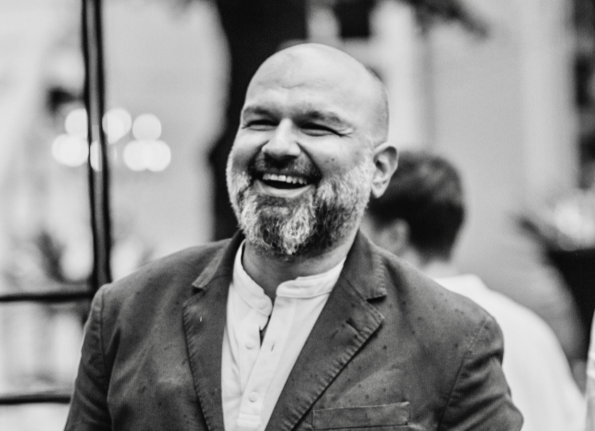

I lead the data team at CGTrader, and co-founded an AI company. I work as the bridge between business and engineering, and I still ship: visual search, pricing models, LLM agents, an LLM-orchestrated valuation engine, and the access-governance layer that keeps them safe to deploy. A decade-plus end to end, now focused on applied LLMs, agentic AI, and AI governance.

Engineer first, leader by trajectory. A decade-plus building data & AI end to end: warehouses, pipelines, ML systems, and lately LLM-orchestrated agents in production. These days I spend as much time on strategy, architecture, and the people who ship. I'm drawn to problems where the answer isn't obvious.
At CGTrader, I lead the data team across engineering, science, and analytics for the Marketplace, CGDream (browser-based 3D AI generator), and Modelry. I own the data & AI roadmap and ship it. I architected the company's 300+ model dbt warehouse on BigQuery and put applied AI into production: CLIP-based visual search for 3D models, a real-time price-suggestion service for sellers, and two LangGraph + Claude agents that handle internal data requests end to end. I also built our AI access-governance layer from scratch, so the team can work with real data without exposing it.
Previously, I led Data Science and Machine Learning at Reccodo, where my team owned recommendation and personalised search end to end. We moved recommendations off heuristic and matrix-factorisation baselines onto embedding-based retrieval with learning-to-rank reranking (two-tower architecture, online serving). I built the MLOps backbone, so the team could ship instead of wrangling infrastructure.
Alongside that, I co-founded Sinequity, Greece's first marketplace for buying and selling SMBs, and built its entire data & AI foundation from zero around an LLM-orchestrated valuation engine. I also sit on ITeQ's board, advising on data & AI strategy.
I still work hands-on, close enough to the build to make the calls that matter while owning the strategy and the stakeholders. I like hard problems, and teams that ship.
Five markets, three continents: carrier-scale telco analytics in Southeast Asia, ed-tech mentoring in the US, and a 3D marketplace in the Baltics.
I lead the data team across engineering, science, and analytics for CGTrader's Marketplace, CGDream (browser-based 3D AI generator), and Modelry. I set the data & AI roadmap and ship it. Player-coach: hands-on with architecture, code review, and modelling, alongside hiring, mentoring, and stakeholder work with product and the C-suite.
Greece's first marketplace for buying and selling SMBs, built around an LLM-orchestrated valuation engine, agentic enrichment workflows, and a data warehouse over the Greek business registry. I built the data & AI foundation from zero. Ongoing involvement is oversight-level while my co-founder runs operations.
Advise management on data & AI strategy across the company's pharmacy network and SaaS platforms.
Led the data science and ML team owning recommendation and personalised search systems end to end, from training data and architecture to deployment, monitoring, and online inference.
Built and shipped the personalised search engine: Elasticsearch retrieval with a personalisation layer that tailored results per user via product embeddings and Redis-backed user profile vectors. Maintained the deployed ML estate and rebuilt hot paths into vectorised implementations to keep inference fast as the catalogue grew.
Mentored students through the Data Analyst Nanodegree: 1:1 guidance on projects, code review, and translating advanced concepts for students at very different levels.
Delivered packet-level network analytics at carrier scale for Tier-1 APAC mobile operators (Indosat and Three), covering network performance optimisation, subscriber behaviour and application usage analytics, segmentation, churn, and ARPU use cases. Owned the full project lifecycle alongside two other PMs sharing a 6–7 engineer team.